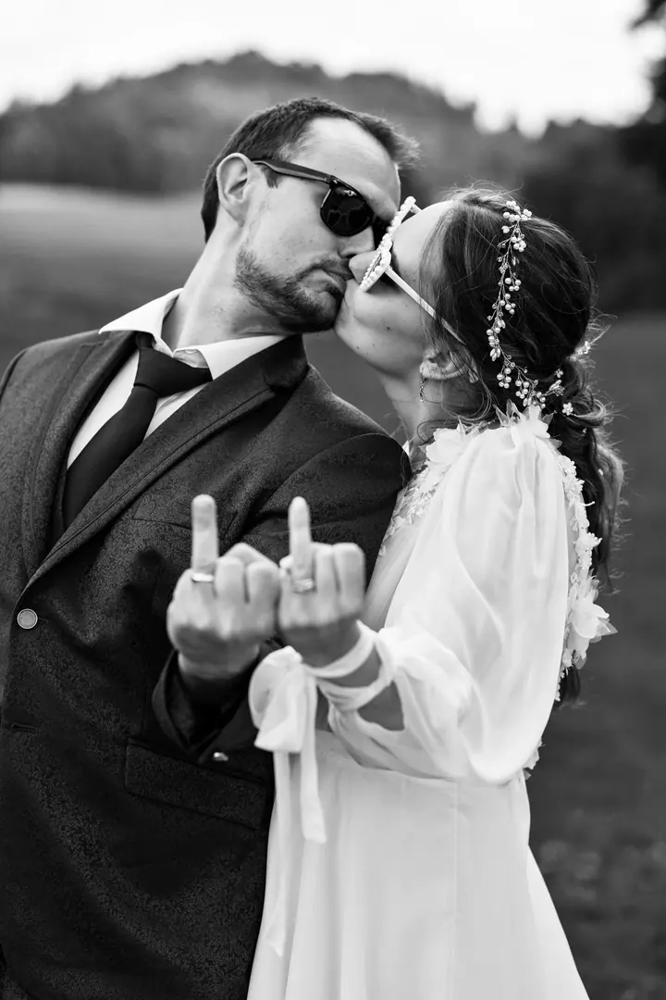
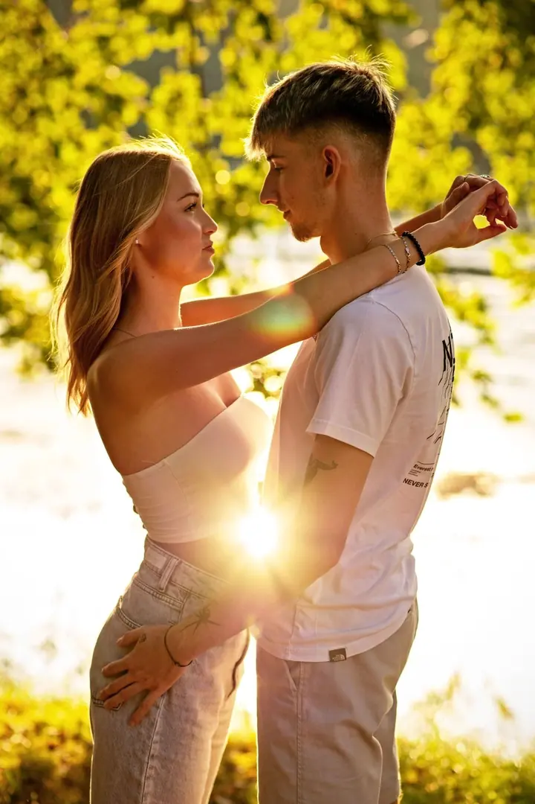
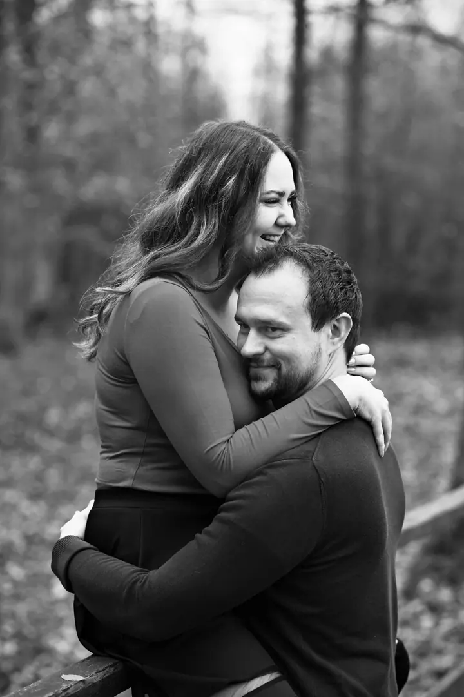
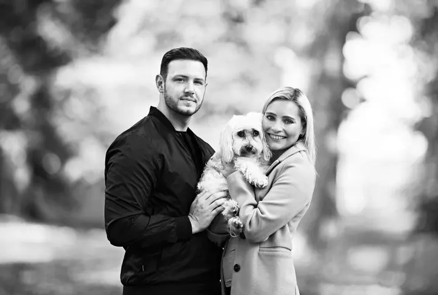

jedna
Svatby
Vaši svatbu vyfotíme s citem a poskládáme z ní příběh celého dne. Vybrat si můžete půldenní nebo celodenní balíček, případně balíček podle vašeho přání.


Jmenuji se Petr Přibyl a pod značkou Foto Přibylovi fotíme svatby, rodiny a páry v České Lípě a okolí. Fotíme nenápadně a hledáme skutečné emoce, aby se k fotkám dalo vracet i po letech.
Více o mně
Co fotím
jedna
Vaši svatbu vyfotíme s citem a poskládáme z ní příběh celého dne. Vybrat si můžete půldenní nebo celodenní balíček, případně balíček podle vašeho přání.
dvě
Focení venku v termínu, který vyhovuje vám i nám. Fotíme děti, rodiny i maminky v očekávání. Na podzim a před Vánoci nabízíme i krátká tematická mini focení.
tři
Společné fotky ve dvou, přirozeně a bez strojených póz. Fotíme venku, v termínu podle domluvy.
Maturitní ples nafotíme celý, od zahájení až po půlnoční překvapení. Fotíme také plesy a koncerty, cenu domlouváme s pořadatelem.
Ke snímkům se dá vracet i po letech.

Za objektivem
Specializujeme se na svatební a rodinnou fotografii. U obojího platí totéž: přirozenost je pro nás vždycky na prvním místě. Nikoho nestavíme do strojených póz, raději se držíme v pozadí a čekáme na chvíle, které přijdou samy.
Ke každé svatbě přistupujeme individuálně. Vaše přání spolu probereme na předsvatební schůzce nebo po telefonu a z celého dne pak poskládáme příběh, který vám zůstane. Pokud chcete, zapůjčíme vám na svatbu i polaroidový fotoaparát.
Kromě svateb fotíme rodiny, děti, páry, těhotenství, mini focení na podzim a před Vánoci a také maturitní plesy. Spolehlivost, lidský přístup a cit pro okamžik jsou pro nás samozřejmost.
Petr
Ozvěte se nám telefonicky nebo přes formulář. Svatební termín závazně rezervujete poplatkem 2 000 Kč, který se pak odečte z celkové ceny.
Před svatbou se sejdeme nebo si zavoláme a projdeme spolu, jak bude den vypadat a na čem vám záleží. Rádi vám ukážeme i naše celá svatební alba.
Fotíme nenápadně a bez strojených póz. Necháme vás užívat si den a zachytíme ho takový, jaký opravdu byl.
Upravené fotografie dostanete v plné kvalitě na webovém úložišti a ze svatby navíc vybrané snímky i v černobílé verzi.
Portfolio
Otázky
Půldenní balíček (6 hodin, zhruba 300 až 400 upravených fotek) stojí 13 000 Kč, celodenní balíček (asi 10 hodin, zhruba 450 až 600 fotek) 16 000 Kč. Balíček přesně podle vašeho přání vám rádi připravíme na dotaz.
Do 25 km od České Lípy jezdíme zdarma, dál počítáme 10 Kč za kilometr.
Základní balíček venku stojí 1 800 Kč a obsahuje 10 upravených fotografií v elektronické podobě. Každá další fotka stojí 150 Kč.
Krátké tematické focení, třeba podzimní nebo vánoční. Trvá asi 20 minut a za 800 Kč dostanete 5 upravených fotek.
Ano, nabízíme dárkové poukazy. Stačí se nám ozvat.